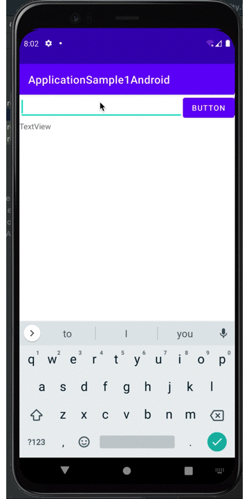
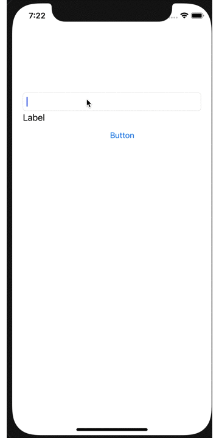

iOSとAndroidの共通モジュールをgomobileで作ってみる
まだうごかない
※ 過去に書いた記事を載せています。今動作するかは不明。。。。
今回は、「 iOSとAndroidの共通モジュールをgomobileで作ってみる」をかーんたんに紹介します(^O^)
はじめに
Android と iOSを開発をしていると共通モジュールを作るのがめんどくさいときがありませんか？ Unity、Xamarin、Flutter、gomobile等いろいろあります。 でも、全てをひとつのモジュールで作ろうと思うと大変です。
例えば、課金関係などは、Android・iOSでは作りが全然違うなど… だったら、主要な部分だけを共通化したライブラリを作ってするという方法もあります。 今回はそのひとつとして、go言語を使ったiOS・Androidの共通モジュールを作っていこうと思います。
開発環境
開発プラットフォーム
| 名称 | 内容 | 備考 |
|---|---|---|
| 機種 | MacBookPro | |
| OS | MacOS 11.0.1 |
ターゲットプラットフォーム
| 名称 | 内容 | 備考 |
|---|---|---|
| Android | ndk/24.0.8215888 sdk/30.0.2 | |
| iOS | 14.0(Xcode 12.2) |
コンパイル言語 & パッケージ
go言語については、書くと時間がかかると思いますので省略します。 詳しいことは、公式ドキュメントが一番理解しやすいので参考にしてください。
| 名称 | 内容 | 備考 |
|---|---|---|
| go | 1.18.3 |
| 名称 | ソース | 備考 |
|---|---|---|
| gobind | golang.org/x/mobile/cmd/gobind | ※1 |
| gomobile | golang.org/x/mobile/cmd/gomobile |
※1 現在,gobobileをインストールしても自動的に入らないため別でいれる
APIや文字処理だけならgo言語はすごく便利です。
gomobileは、どんなことをするのか
gomobileは、go言語でAndroidおよびiOSのモジュールまたは、アプリを作成するパッケージツールです。
gomobileで作成できるのは2種類で「Application全体を作成」または、「モジュールを作成」です。 「Application全体を作成では、OpenGL ES2を描画に使ったアプリケーションをまるっと作ります。C言語もバインディングできますのでいろいろなことが出来るようです。
モジュール作成は、Androidでは、AAR（Android ARchive）ファイルを生成し、iOSではframeworkを作成します。
今回は、モジュール作成をします。
前準備
iOS
Xcode を基本的にインストールすれば何もいりません。
Android
ndkをインストールする必要があります。 ndkはAndroid Studioをインストールすると簡単に導入できるのでまずは下記からをインストールします。
Android Studio (https://developer.android.com/studio/?hl=ja)
NDKのインストールは、Android Studioを起動し、 Preferences > Appearance&Behavior > System Settings > Android SDK の SDK Toolsタブを選択します。そして、右下の 「Show Package Details」を選択し、「NDK」内の「21.3.6528147」を選択し、インストールします。 （NDKは、現在、21.3.6528147以前しか対応していないみたいなのでこういうようにします）
( image url)
image url)
インストール後、パスを設定します。
export ANDROID_NDK_ROOT=$HOME/Library/Android/sdk/ndk/24.0.8215888
export ANDROID_NDK_HOME=$HOME/Library/Android/sdk/ndk/24.0.8215888
go言語
go本体インストール
現在使えるgoのバージョンは、「1.15.6」です。 goenvやHomebrewなどを使用してインストールしてください。 （今回は、shellを用意しております。後ほど紹介します。）
共通プログラム作成
今回は、goで作った関数に文字を入力すれば、 前に文章をつけてくれるという簡単なプログラムを作成します。
go言語では、クラスという概念がないのですが、オブジェクト指向として、 構造体をインスタンスとして動作させることが出来ます。
ですので、構造体の関数を作ります。
main関数は作成しません。 また、パッケージ名は、Androidで使用するパッケージクラスを用います。
パッケージの設定
go 12より正式採用されたGo Modulesを使用して、パッケージを設定します。
mkdir sample1
cd sample1
必要なパッケージをインストール
go install golang.org/x/mobile/cmd/gomobile@latest
go install golang.org/x/mobile/cmd/gobind@latest
go mod init example.com/sample1 # <- これがAndroidのパッケージ名となります。
gomobile init
基本これで、gomobileのインストールは完了。パスが通っていれば使用出来ます。 （※ ドキュメントには、gombileのみでいいように書いていますが、バージョン1.15だと うまく動作がしない場合があるので bindもインストールするようにしております。）
ソースの作成
関数本体を作成します。
sample1.go
package sample1
import (
"errors"
)
// Golib is an interface for go library
type Sample1 interface {
Foo(msg string) (string, error)
}
type sample1 struct {}
// NewClient returns an instance of GomoPoster
func NewClient() Sample1 {
return &sample1{}
}
func (g *sample1) Foo(msg string) (string, error) {
if msg == "error" {
return "", errors.New("this is golang error")
}
return "Hi! this is golang! your message is " + msg, nil
}
フォルダ内は以下のようになります。
./sample1
├── go.mod
├── go.sum
└── sample1.go
コンパイル
コンパイルは、以下のコマンドをたたくと簡単に作ってくれます。
gomobile build [-target android|ios] [-o output] [-bundleid bundleID] [build flags] [package]
- Androidの生成
gomobile bind -v -o sample1.aar -target=android example.com/sample1
「sample1.aar」が生成されます。
- iOSの生成
gomobile bind -v -target=ios example.com/sample1
「Sample1.framework」が生成されます。
アプリに実装し、起動。
あとは、Androidでは、「AAR」ライブラリの取り込み、iOSでは、「framework」の取り込みすれば簡単に取り込めます。
各ターゲットのサンプルの抜粋を書いておきます。
Android(サンプル抜粋)
・・・・
override fun onCreate(savedInstanceState: Bundle?) {
super.onCreate(savedInstanceState)
setContentView(R.layout.activity_main)
val buttonGo: Button = findViewById(R.id.go)
buttonGo.setOnClickListener {view ->
val edittextMessage: EditText = findViewById(R.id.message)
val textviewAnswer: TextView = findViewById(R.id.answer)
val sample1: Sample1_ = Sample1.newClient()
var msg:String
try {
msg = sample1.foo(edittextMessage.text.toString())
}catch(ex: Exception ) {
msg = ex.message.toString()
}
textviewAnswer.setText(msg)
edittextMessage.setText("")
}
}
・・・・
Androidの動作はこんな感じ

iOS(サンプル抜粋)
・・・・
@IBAction func goButton(_ sender: Any) {
let golib:Sample1Sample1 = Sample1NewClient() as! Sample1Sample1
var msg:String = ""
do {
msg = golib.foo(edittextMessage.text, error: nil)
} catch {
msg = "エラー"
}
textviewAnswer.text = msg
edittextMessage.text = ""
}
・・・・
iOSの動作はこんな感じ 
今回、テストで作ったソースは、こちらにあります。 Mac用ですが、コンパイラのインストールからコンパイルまでやってくれるようにしております。 参考になればと。。。。。。